Aggregate Supply
Sessions Program
- Session 1: introduction / reminders on macro
- Session 2: aggregate demand
- Session 3: aggregate supply
- Session 4: macroeconomic fluctuations
- Session 5: monetary policy
- Session 6: unconventional monetary policies
Imperfect Market Competition
Market Structures
In the micro course, you have seen several models of market structures:
- Perfect competition: each firm is a price-taker
- Monopoly: the firm has some market power
- Duopoly: each firm takes into account decisions of the other firm (Bertrand, Cournot)
- Strategic interactions: game theory
For our purpose, we will use a structure that is somewhere between perfect competition and monopoly : monopolistic competition.
Price setting behaviour
We want to use a model of optimal pricing to study what happens when firm’s can’t adjust immediately.
What about Perfect Competition?
- the selling price \(p=mc\) is independent from the demand
- all firms charge their marginal cost \(mc\)
- how much firms can produce at their marginal cost is independent from aggregate price.
That’s not useful to derive the AS curve. But it would be a model of the long run equilibrium.
Price setting behaviour
The dependence of aggregate supply on prices implies some form of market power from the firms. You have seen in micro the case of:
Monopoly pricing:
- a monopolist faces a price elastic demand \(y(p)\) with a linear production cost \(mc\)
- she maximizes profit by setting the right price: \(\max y(p) p - w y(p)\)
- result: the firm charges \(p=(1+\mu)\) where \(\mu\) depends on demand elasticity.
- \(\mu\) is a mark-up over production costs
That’s better, but how do we capture the fact that only some of the prices adjust if there is only one producer and one price?
Price setting behaviour
Monopolistic Competition is a market structure where:
- there are many producers (say \(N\)) who don’t interact directly (no strategic interaction)
- they produce goods that are imperfect substitute (i.e. consumers want to consume a bit of them all)
- consequently, each producer has a bit of market power, since he can charge a higher price without immediately loosing all consumers
- … and charges a markup \(\mu\) on production cost \(p=(1+\mu)mc\) much like a monopoly
- … but the markup depends (negatively) on how indifferent the consumers are to have one good instead of another and (positively) on the intensity of the competition (the number of firms)
Price Setting Behaviour: Monopolistic Competition
Markups are one way to measure how competitive industries are.
| Manufacturing | Services | |
|---|---|---|
| United States | 28% | 36% |
| Euro Area | 18% | 56% |
| France | 15% | 26% |
| Germany | 16% | 54% |
| Italy | 23% | 87% |
Note that it is not the only measure of competitivity. For instance, an industry could have very low markups, but excessive costs, coming from lack of competition.
Markups: EU vs. US
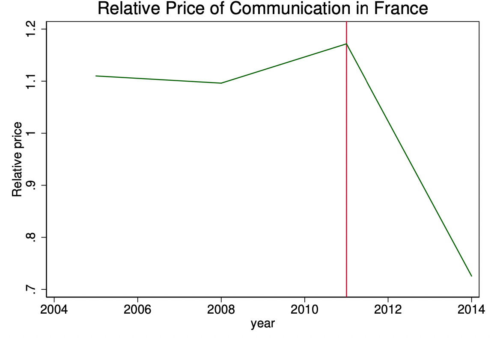 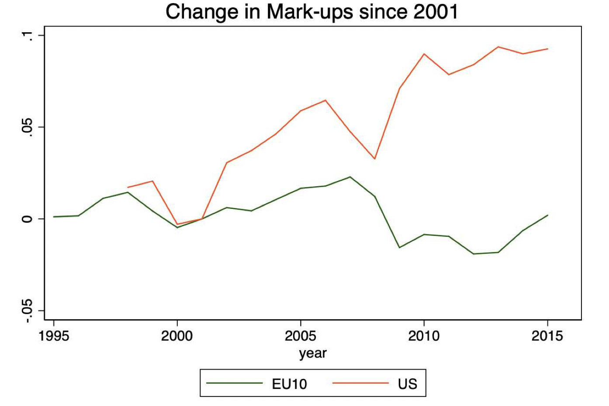
From Thomas Philippon, The Great Reversal. How America Gave up on Free Markets, 2019
Producers
We want to understand the behaviour of firms,… in a macro environment
- Firms charge prices on the goods markets
- Firms hire workers on the labour market
Both are interdependent:
- workers with higher wages increase demand for consumption goods
- higher prices make worker ask for salary rises
Wages and salary
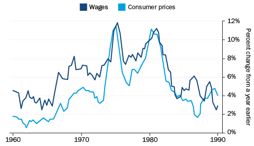
There is a clear correlation between cost of living and salary.
In the 60s and 70s price inflation and wage inflation were accelerating together.
The inflation spiral
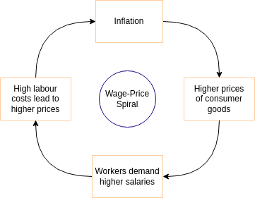
It lead economists to believe there was a wage-price inflation spiral…
- prices increase
- \(\Rightarrow\) workers demand higher wages
- \(\Rightarrow\) production costs increase
- \(\Rightarrow\) prices increase, ….
The inflation spiral
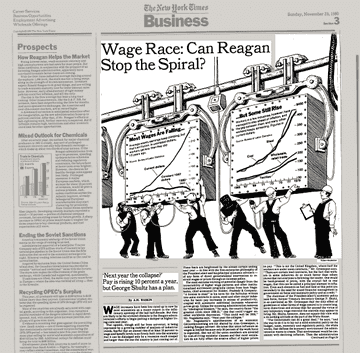
…And advocate policy measures to limit inflation
- Nixon: 1970, price-freeze on wage and prices
- to no avail
This inflation stopped with Volcker plan
- Fed raised interest rates from 17% to 20%
- inflation was brought under control at the cost of a deep recession in 1982/1983
The inflation spiral

Nowadays out of control wage-price spirals are believed to be unlikely events
- agents correctly anticipate future inflation
- incorporate these expectations into wage- and price- setting
- when all markets are in equilibrium, inflation returns towards equilibrium
A firm in a macro-enviroment
Our main goal today
Establish why in equilibrium, monopolistic firms choose to produce more when prices increase.
Goods Market
We assume that firms produce using labour \(L\) rented at hourly wage using simple production function \[Y=L\]
The marginal cost of producing a unit is just \(W\).
Under monopolistic competition the optimal price set by firms is thus:
\[\boxed{P^{\star} = (1+\mu) W}\]
where \(\mu\) is a special markup which measures the intensity of competition as we have seen before.
Labour Market
What is the cost of hiring workers?
To understand the cost of hiring workers we look at the labour market
What do we know for sure?
- the cost is higher when aggregate prices are higher
- because workers demand higher salaries
- the cost is higher when the amount of work is higher
- because workers don’t like to work so much…
Unemployed workers: where do they all come from?
Neoclassical Synthesis
Some workers are unvoluntary unemployed
New Neoclassical Synthesis
Households choose rationally how much work they supply
- arbitrage between leisure and work
- variations in labour supply are microfounded using preferences of workers
- labour market in equilibrium
- no unvoluntary unemployment
Search Theory
More recent developments:
- by Mortensen, Pissarides, Diamond, …
- workers and employers constantly look for a match
- the lack of good matches is explained by the model
Labour Supply
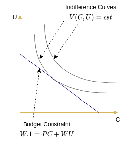
A worker chooses to supply labour \(L\leq 1\).
He can either:
- consume basket of goods \(C\) at price-level \(P\)
- enjoy free time \(U=1-L\)
We can write the budget constraint: \[W 1 \geq P C + W U\]
Utility to maximize is\[V(C,u) = \log(C) + \xi U^{-\frac{1}{\xi}}\]
Labour Supply
The result of the optimization yields:
\[\boxed{L^S = \left(\frac{W}{P}\right)^\xi}\]
The labour supply is an increasing function of the real wage.
- it increases when wages increase
- it decreases when price level increases
Parameter \(\xi\) is the elasticity of labour supply to real wage
Labour Cost
The last relation can be inverted to get the wage firms need to post to hire \(L\) workers:
\[W(L) = P L^{\frac{1}{\xi}}\]
We see clearly that the equilibrium wage is:
- proportional to the price level
- increasing in the number of workers
Facing higher demand, all firms will be able to produce more, but will face increasing costs as workers become more expensive.
The Wage-Price nexus
Recall the identity \(Y=L\), so that \(W(L)=W(Y)\).
Summarizing what we have so far:
- Goods market:
- optimal price: \(P^{\star} = (1+\mu) W(Y)\)
- Labour market
- wage rate: \(W(Y) = P Y^{\xi}\)
How do these two markets relate with each other? What kind of dynamics do they create?
The natural equilibrium
The natural equilibrium
Natural equilibrium: production level when all prices are flexible or have had enough time to adjust.
Here it means the the price \(P^{\star}\) set by the firms must be equal to the price level \(P\)
We can write: \[P = (1+\mu) \underbrace{P Y^{\xi}}_{W(Y)}\]
Which yields: \[1=(1+\mu) Y^{\frac{1}{\xi}}\]
This equation pins down equilibrium production \(Y\). Note also that the price level has disappeared. It is indeterminate.
Natural Output
The natural output level is: \[\boxed{Y^{nt}=\left(\frac{1}{1+\mu}\right)^{\xi}}\]
Remarks
- it is decreasing in markups \(\mu\)
- intuition: each firm is in a partial monopoly and its optimal strategy consists in rationing the market to increase prices and profits
Long Run Aggregate Supply
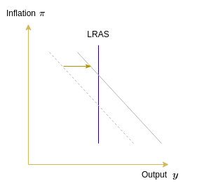
- Natural output
- or the supply with flexible prices
- corresponds to the classical view
- is represented as a vertical line in the \((\pi,y)\) plane
- is more likely to hold in the long run (prices have time to adjust)
- is also called Long Run Aggregate Supply (LRAS)
- When prices are perfectly flexible, demand policies are ineffective
- they just raise inflation
Long Run Aggregate Supply
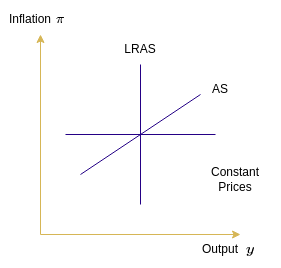
Between the two extreme cases:
- constant prices
- no supply constraint
- a way to think about demand policies
- perfectly flexible prices
- vertical curve
- classical world
Can we model a situation where there is limited adjustment of prices?
Would it lead to an upward sloping AS curve?
- i.e. a positive relationship between inflation and output in the short term?
Nominal rigidities
Nominal rigidities
To get away from the natural equilibrium, we need some friction in either the goods or the labour market.
Most common explanations:
- sticky wages:
- labour market is not in equilibrium
- sticky prices:
- firms cannot adjust prices freely
- misperception:
- firms adjust prices freely but don’t use the right information
Central assumption of new Keynesian models: some nominal rigidities have real effects
Sticky Prices
Sticky Prices
- If prices were flexible, they would change all the time
- Stock prices are updated continuously (LSE: 126 microseconds)
- There are actual statistics about price changes: they are sticky (see table below)
- Monthly frequency of price changes: proportion of all prices that are adjusted each month
- Mean price duration: average time it takes for an average price to be revised
| Euro area (1996-2000) | United States (1998-200) | |
|---|---|---|
| Monthly frequency of prices changes | 15.1% | 21.5% |
| Mean price duration | 13.0 months | 9.6 months |
Which prices are most sticky?
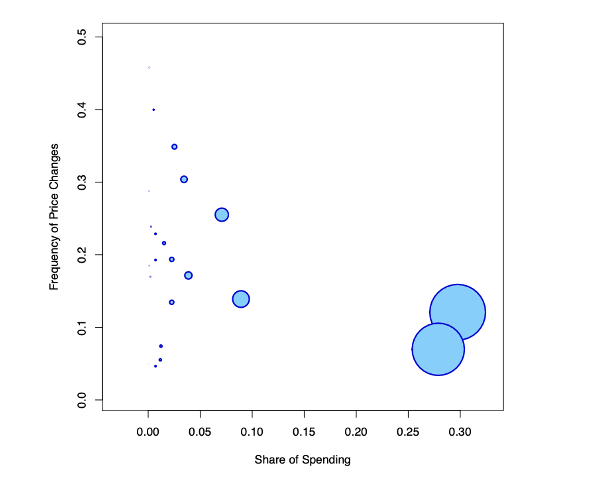
Sticky Prices
We will model the situation where by assuming only a fraction \(\omega \in [0,1]\) of the firms have a chance to adjust their prices in each period
Goods are sold at two different prices:
- \(P_{t-1}\): old price, still used by non-adjusting firms
- \(P^{\star}_t\): optimal price set by adjusting firms
Then we have the price of a consumption basket which is an average of both prices
- \(P_t= P_{t-1}^{(1-\omega)}(P^{\star})^{\omega}\)
Calculations
Let’s go back to the optimal pricing decision: \[P^{\star}_t = (1+\mu) \overbrace{P_t Y_t^{\frac{1}{\xi}}}^{\text{Cost of labour}}\]
Now, in equilibrium, new prices set by optimizing firms modify the price of the consumption baskes (and the purchasing power of workers) but only partially: \[P^{\star}_t = (1+\mu) {\underbrace{P_{t-1}^{(1-\omega)}(P^{\star}_t)^{\omega}}_{P_t} Y^{\frac{1}{\xi}}}\]
We can rewrite: \[\left(\frac{P^{\star}_t}{P_{t-1}}\right)^{1-\omega} = (1+\mu) Y_t^{\frac{1}{\xi}} \Leftrightarrow Y_t = \left(\frac{1}{1+\mu}\right)^{\xi}\left(\frac{P^{\star}_t}{P_{t-1}}\right)^{\xi (1-\omega)}\]
Equilibrium Production
The ratio \(\frac{P^{\star}_t}{P_{t-1}}\) is useful for the adjusting firms only, but rewriting the price average formula as \(\frac{P^{\star}_t}{P_{t-1}}=\left(\frac{P_t}{P_{t-1}}\right)^{\frac{1}{\omega}}\) we get a nicer version:
\[Y_t = \left(\frac{1}{1+\mu}\right)^{\xi}\left(\frac{P_t}{P_{t-1}} \right)^{\xi\frac{1-\omega}{\omega}}\]
Or, as a function of inflation: \[\boxed{Y_t = \left(\frac{1}{1+\mu}\right)^{\xi}\left(1+\pi_t \right)^{ \xi\frac{1-\omega}{\omega}} }\]
This equation establishes a positive relationship between inflation and output.
Calculations
In the last equation, we recognize natural output: \(Y_t^{nt} =\left( \frac{1}{1+\mu} \right)^{\xi}\)
\[Y_t = Y^{nt} \left(1+\pi_t \right)^{ \xi\frac{1-\omega}{\omega}} \]
Take the logarithms to get a linear equation: \[y_t - y^{nt}_t= \xi \frac{1-\omega}{\omega} \pi_t\]
If we set \(\kappa = \frac{1}{\xi}\frac{\omega}{1-\omega}\) we obtain our version of the Philips Curve
\[\boxed{\kappa (y_t-y^{nt}_t) = \pi_t}\]
Phillips Curve (William Phillips, 1958)

Originally, the Philips Curve was stated as a negative relationship between inflation and unemployment.
Unemployment is obviously linked to labour and labour to output - in our model \(Y=1-L\)
Our AS Curve
We obtained the AS curve as: \[\pi_t = \kappa (y_t- y^{nt}_t)\]
with \[\kappa = \frac{1}{\xi} \frac{\omega}{1-\omega}\]
where \(\omega\) is the fraction of firms.
This formulation encompasses:
- the LRAS: when \(\omega=1\)
- rigid prices: when \(\omega=0\)
- all cases in between
Along the way we made some simplification w.r.t. the workhorse New Keynesian framework:
- we have ommitted productivity shocks
- we’ll just assume they are deviations in \(y^{nt}_t\)
- we haven’t incorporated any “expectation” in the firm’s behaviour
- in principle, they should make rational price forecasts to set their prices
- this would include a term in \(\pi_{t-1}\) and/or \(\pi_{t+1}\) depending on how forecasts are made
Sticky Prices
Assume prices start from the equilibrium long-run level
- A shock creates some inflationary pressure (for instance the CB lowers interest rates)
- Prices should increase
- But firms can’t easily adjust their prices
- So instead of increasing their prices they produce more
- And hire more workers
- Production is increased and unemployment is reduced
We have seen in the preceding slides, that it is possible to make rigorous sense of this series of events.
Sticky wages
Sticky Wages
There is an alternate theory which also generates an upward sloping AS curve: the sticky wage theory.
If labour market was frictionless, wages would adjust immediately upward and downward.
But in practice, both employers and employees avoid salary cuts.
There two main main schools of thought to explain why:
- unions and wage bargaining
- efficiency wage theory
Are wages sticky ?
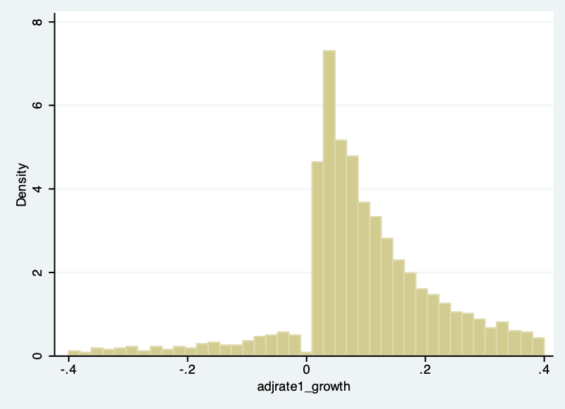
Sticky Wages
Suppose wages are not easily renegociated in the short term. Consider the following string of events:
- A shock creates some inflationary pressure (for instance the CB lowers interest rates)
- Prices tend to increase
- Since real wages fall, workers ask for them to be reevaluated
- But contracts are not easily renegociated
- Cost of workers remain cheap
- Firms produce more and increase employment
Misperception
Misperception
- B. Lucas proposed another explanation: producers observe only changes in the price of the goods they are selling, and don’t know whether observed changes are idisyncratic or related to overall inflation. They misperceive the nature of inflation.
- Under this setup, he showed how output can move with unexpected inflation shocks.
Misperception
Suppose producers observe the prices of their own industry. They don’t realize that they are indexed on the aggregate prices. Here is the story:
- A shock creates some inflationary pressure (for instance the CB prints some money)
- Prices tend to increase
- Producers of a given industry observe higher prices in their sector
- They believe (falsely) their industry is comparatively more profitable
- They decide to produce more and hire more workers
Misperception
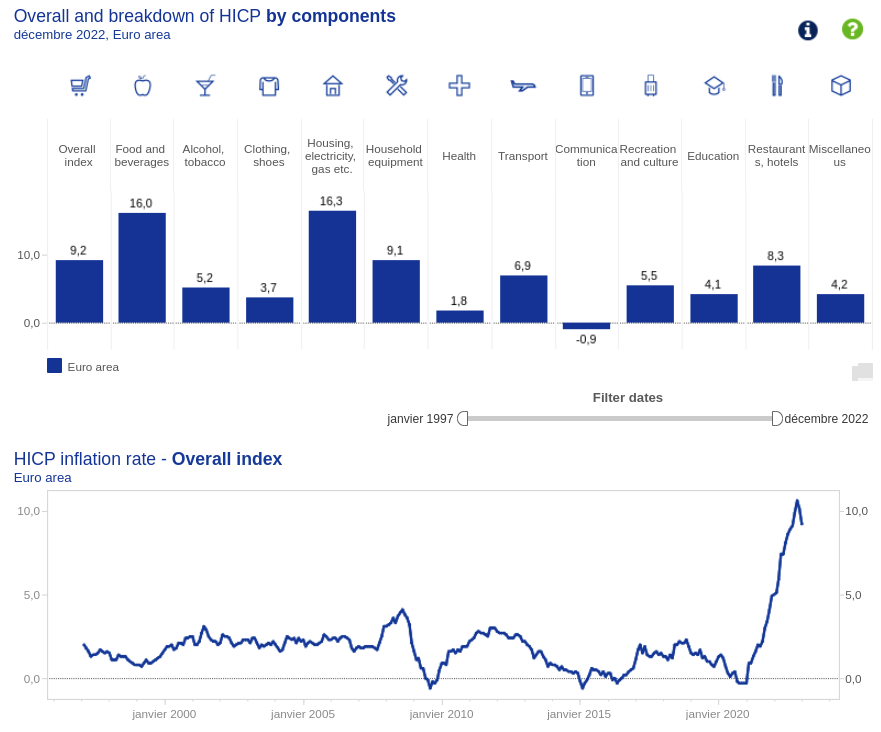
With increased transparency (check the dashboard) from western Central Banks, this channel is less relevant nowadays, outside of disorderly conditions.
Conclusion
Executive Summary
- The AS curve results from the interaction between the labour market and the goods markets
- New Keynesian models require AS curve to be upward sloping rather than vertical
- This is needed for demand policies to be effective
- One needs two ingredients to obtain this result:
- some market imperfection on the goods market (ex: monopolistic competition)
- nominal rigidities: (ex: staggered price setting aka sticky prices)
Learning guide
- how do monopolistic firms set their prices
- what determines wage-rate at which workers are ready to work
- what is the natural output
- the intuition behind the three theories to explain AS curve:
- sticky prices
- the steps of the derivation1
- sticky wages
- misperception
- sticky prices
Coming Next
Macroeconomic Fluctuations: what are the shock and how should the central bank and the government respond to them
Footnotes
This is not strictly required.↩︎